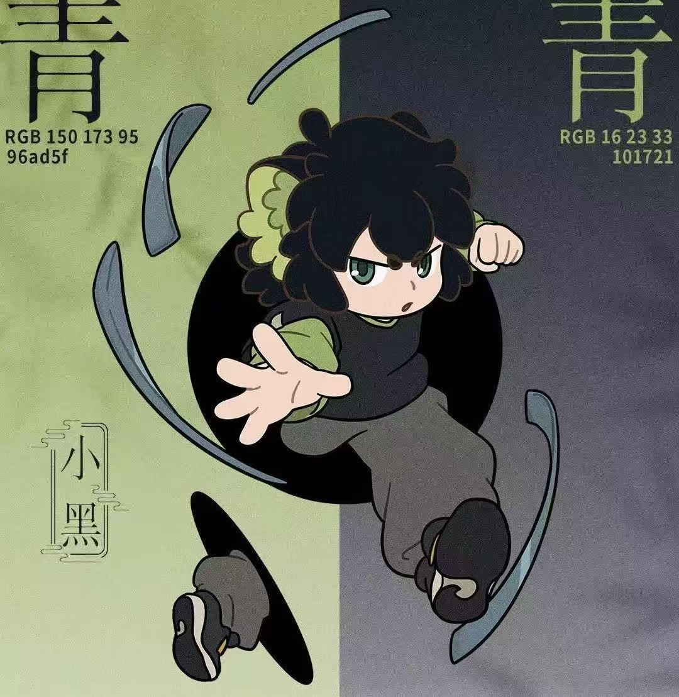
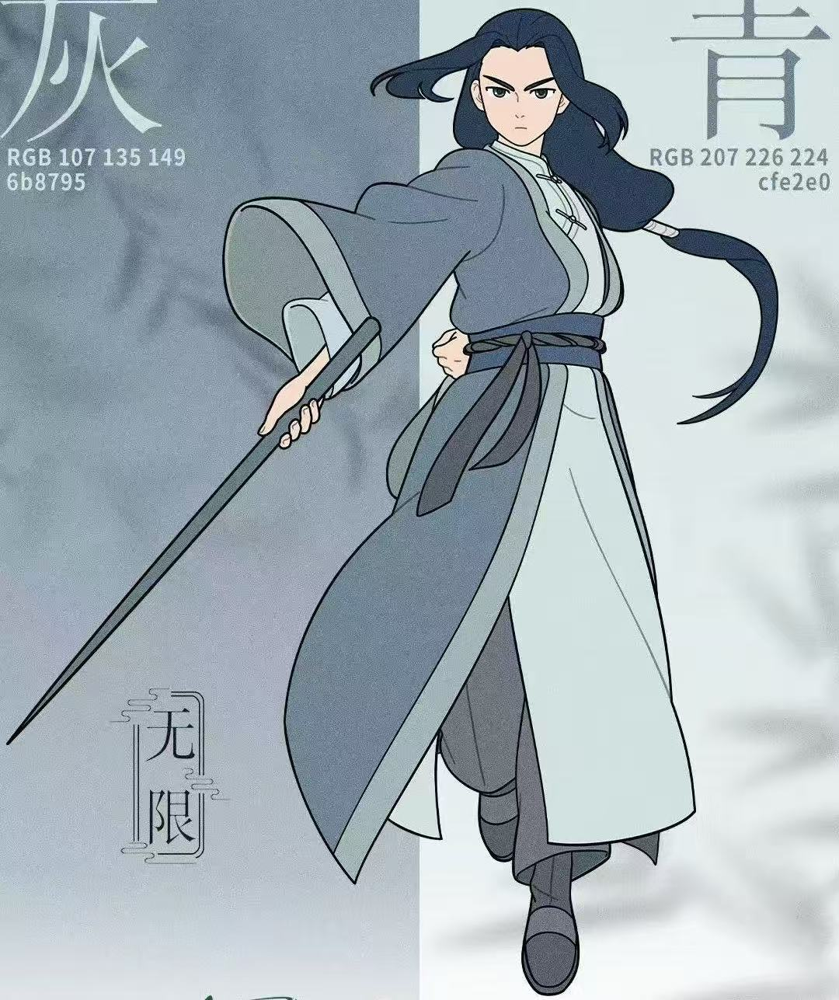
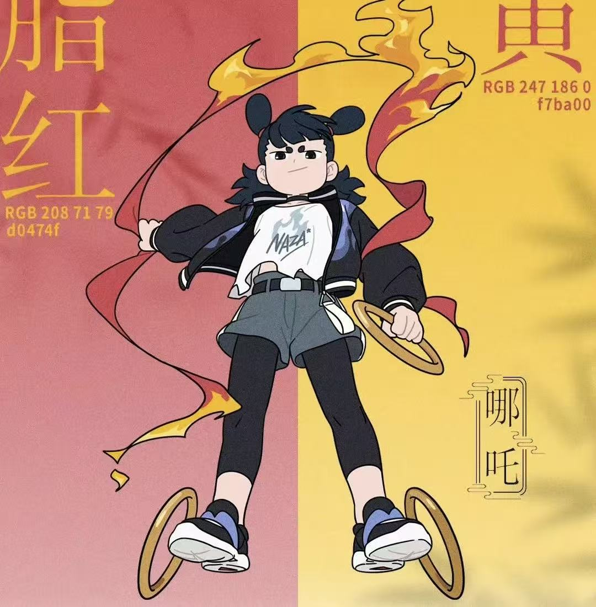
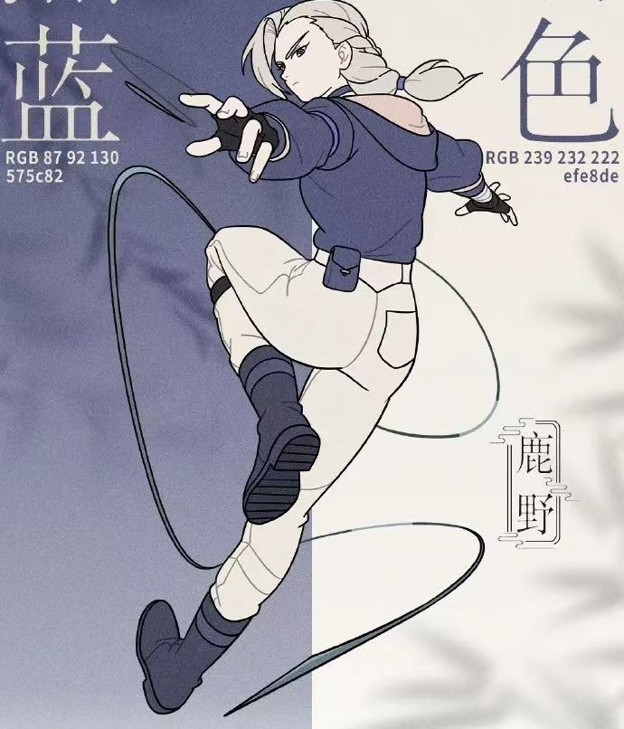
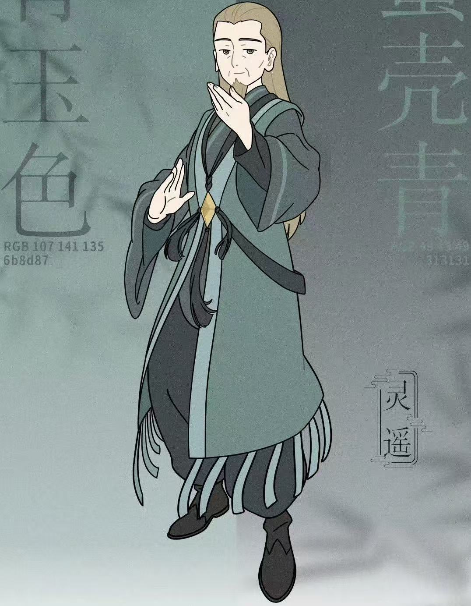

姓名：罗小黑 生日：定在11月11 种族：妖精 年龄：10 能力类型：空间系-传送、领域（已失去）/御灵系-金 配音：山新 罗小黑诞生在2011年，原型是导演曾养过的一只黑猫 [5]。 原名小黑，遇见罗小白后由罗小白取名为“罗小黑”。师从无限，不会识字。因盗取老君天明珠而被谛听打回原形。躲入纸箱中避雨误被小白捡回家，取名罗小黑。尾巴是身长的两倍，可变成翅膀，也可分裂成名为黑咻的有意识体，随着小黑能力越强，黑咻也会越多，现可分裂为四个，也可以无限分裂，但总体积不变。是罕见的双灵质空间体质。
姓名：无限 种族：人类（已成神） 能力：御灵系-金、空间系-吞噬 年龄：437 配音：刘明月 贯穿主线的人物。会馆最强执行者，小黑的师父，不常显露表情，但其实内心感情丰富。因人类的身份及从前与会馆一些妖精有过摩擦而不太受欢迎。让小黑前往老君山盗取天明珠，与老君是旧相识。
姓名：哪吒 种族：妖精 能力：御灵系-火、生灵系-幻化、锁御系-灵御 妖灵会馆总部的成员，实力强大。头上两个小辫子是作为“哪吒”的识别性标志，拔掉别人就认不出了。 哪吒的乾坤圈与风火轮是相同的三个环，尺寸可变，可分化为数十个，也可合体为一个，变成手环，衣服会盖住，名为“风火乾坤圈”。世人以为是两样法宝。
姓名：鹿野 种族：人类 能力：御灵系-金，生灵系-追毫 罗小黑的师姐，是无限的关门弟子，面无表情、寡言少语。鹿野拥有强大的战力，能够操控金属如臂使指，在飞机大战中切割机身、逼退骨龙，展现出了非凡的战斗能力。同时，她还具备敏锐的洞察力和聪慧的头脑，在追查事件真相过程中，能够抽丝剥茧，通过巧妙的布局让真正的凶手现身。
姓名：灵遥 妖灵会馆分馆长。灵遥是一个智者和极端主义者的结合体，他表面上可能和蔼可亲，但实际上内心有着自己的盘算和坚定的信念，为达目的不择手段。他认为人类的科技发展可能会威胁到妖精的生存空间，而妖灵会馆在人妖关系的处理上没有达到他的期望，于是他开始思考妖精的未来，并逐渐走上了极端的道路。